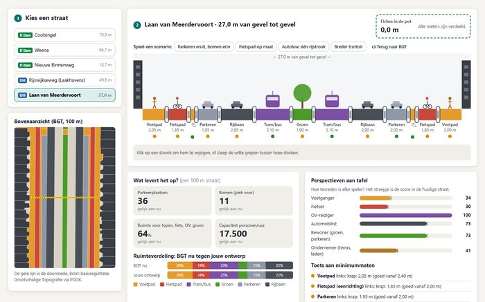
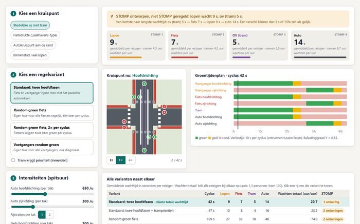
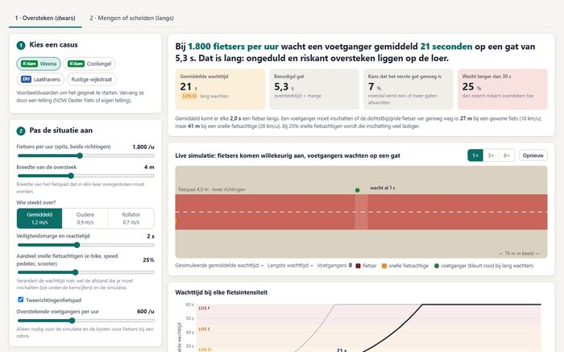
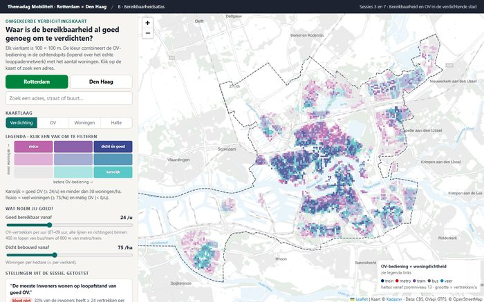
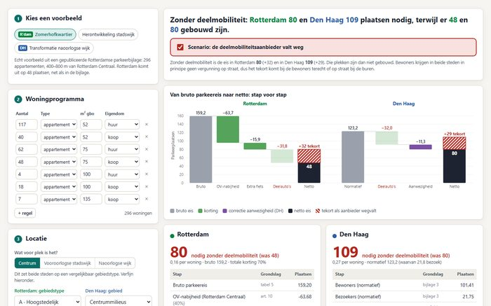
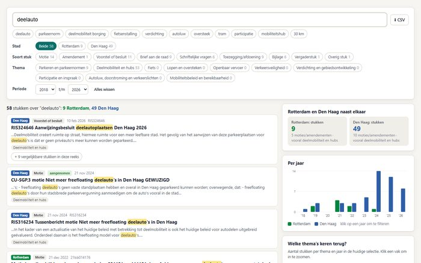

Zes werkende inzichtprototypes, gebouwd op open data van beide steden. Elk prototype opent in de browser, zonder installatie. Kies hieronder een tool, klik op een voorbeeld, en schuif. Onderaan staat hoe ze gemaakt zijn en wat er nodig is om er een werkproces van te maken.






Elk script declareert zijn eigen afhankelijkheden (PEP 723) en draait met één commando via uv.
uv run data_prep/prep_bereikbaarheid.py # CBS 100 m + GTFS NL + OSM, ~5 min uv run data_prep/prep_straatprofielen.py # BGT-doorsneden, ~1 min uv run data_prep/prep_precedenten.py # Open Raadsinformatie, ~2 min
Les van deze bouw: de publieke Overpass-API lag eruit. Het looppadennetwerk komt daarom uit de Geofabrik-uitsnede van Zuid-Holland. Zo’n terugvaloptie hoort bij elk werkproces.
| Bron | Tool | Stand |
|---|---|---|
| BGT via PDOK (CC0) | A | nov 2026 |
| CBS Vierkantstatistieken 100 m | B | 2024, nabijheid 2023 |
| GTFS NL, OVapi (CC0) | B | dienstregeling 10 nov 2026 |
| OpenStreetMap, Geofabrik (ODbL) | B | nov 2026 |
| Parkeerregels op lokaleregelgeving.overheid.nl | C | R'dam 2025, DH 2024 |
| Open Raadsinformatie | D | tot juli 2026 |
| PDOK Locatieserver en BRT-achtergrondkaart | A, B | live |
Geen persoonsgegevens, geen ruwe iVRI-data en geen interne stukken in deze prototypes. Tools die besluiten gaan ondersteunen, horen in het algoritmeregister.